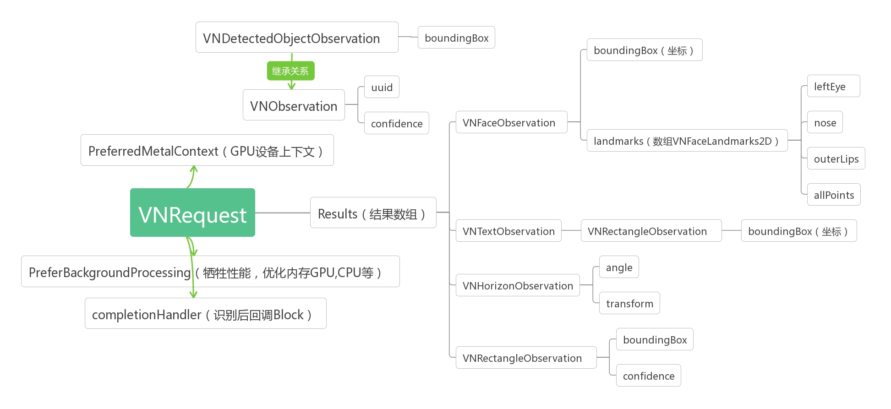

Core ML-Vision
Vison 与 Core ML 的关系
Vision 是 Apple 在 WWDC 2017 推出的图像识别框架。
Core ML 是 Apple 在 WWDC 2017 推出的机器学习框架。

Core ML的作用就是将一个Core ML模型，转换成我们的App工程可以直接使用的对象,就是可以看做是一个模型的转换器。
Vision在这里的角色，就是相当于一个用于识别Core ML模型的一个角色.
Core ML可以看做一个模型的转换器，可以将一个 ML Model 格式的模型文件自动生成一些类和方法，可以直接使用这些类去做分析，让我们更简单的在app中使用训练好的模型。
Vision本身就是能对图片做分析，他自带了针对很多检测的功能，相当于内置了一些Model，另外Vision也能使用一个你设置好的其它的Core ML Model来对图进行分析。
Vision就是建立在Core ML层之上的，使用Vision其实还是用到了Core ML，只是没有显式地直接写Core ML的代码而已。
应用场景
Face Detection and Recognition（人脸检测和识别）
Machine Learning Image Analysis（机器学习图像分析）
Barcode Detection（条码检测）
Image Alignment Analysis（图像对齐分析）
Text Detection（文本检测）
Horizon Detection（地平线检测）
Object Detection and Tracking（对象检测和跟踪）
Vison 的使用 与结构图
Vision使用中的角色有： Request，RequestHandler，results和results中的Observation数组。
Request类型： 有很多种，比如图中列出的 人脸识别、特征识别、文本识别、二维码识别等。

// 转换CIImage
let cgImage = image.cgImage!
// 创建处理requestHandler
let detectRequestHandler = VNImageRequestHandler(cgImage: cgImage)
// 设置回调
let completionHandler: VNRequestCompletionHandler = { (request: VNRequest, error: Error?) in
self.handleImageWithType(type: type, image: image, observations: request.results!, complete: complete)
}
// 创建Request
var detectRequest = VNDetectFaceRectanglesRequest.init(completionHandler: completionHandler)//面部轮廓
//var detectRequest = VNDetectFaceRectanglesRequest.init(completionHandler: completionHandler)//面部特征
// 发送请求
try? detectRequestHandler.perform([detectRequest])
// 转换CIImage
let cgImage = image.cgImage!
// 创建处理requestHandler
let detectRequestHandler = VNImageRequestHandler(cgImage: cgImage)
// 设置回调
let completionHandler: VNRequestCompletionHandler = { (request: VNRequest, error: Error?) in
self.handleImageWithType(type: type, image: image, observations: request.results!, complete: complete)
}
// 创建Request
var detectRequest = VNDetectFaceRectanglesRequest.init(completionHandler: completionHandler)//面部轮廓
//var detectRequest = VNDetectFaceRectanglesRequest.init(completionHandler: completionHandler)//面部特征
// 发送请求
try? detectRequestHandler.perform([detectRequest])
// 处理人脸特征回调
class func faceLandmarks(observations: [VNFaceObservation], image: UIImage, complete: detectImageHandler) -> Void {
for faceObversion in observations {
// 获取细节特征
let landmarks: VNFaceLandmarks2D = faceObversion.landmarks!
//...
}
}
// 处理人脸特征回调
class func faceLandmarks(observations: [VNFaceObservation], image: UIImage, complete: detectImageHandler) -> Void {
for faceObversion in observations {
// 获取细节特征
let landmarks: VNFaceLandmarks2D = faceObversion.landmarks!
//...
}
}
项目代码：CoreML-Vision